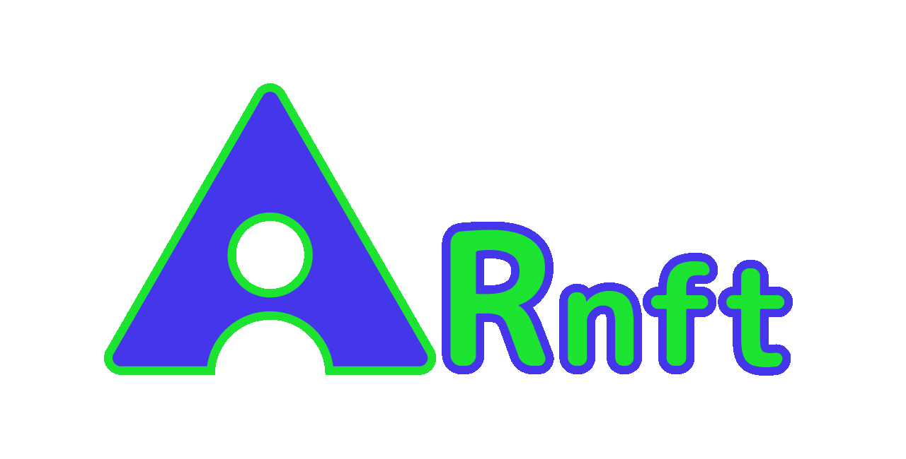

@webarkit/ar-nft


🖼️ ARnft - WebAR with NFT

A small javascript library to develop WebAR apps. It is based on jsartoolkitNFT a lighter version of jsartoolkit5 only with NFT markerless technology. It uses ARnft-threejs for the rendering part.
🚀 Start using it !
:one: Clone the repository:
git clone https://github.com/webarkit/ARnft.git
:two: Install the npm packages with yarn:
yarn install
or with npm:
npm install
:three: Run the node server:
npx http-server -c-1
(-c-1 disables caching, so the browser always loads the latest dist/ and config.json.)
:four: Go to the examples:
http://localhost:8080/examples/arNFT_example.html
To test on a phone, the page must be served over HTTPS, because browsers only allow the camera on HTTPS or localhost. Create a self-signed certificate once and start the server with it:
openssl req -x509 -newkey rsa:2048 -nodes -keyout key.pem -out cert.pem -days 365 -subj "/CN=localhost"
npx http-server -c-1 -S -C cert.pem -K key.pem
Then open on the phone the https:// address printed by http-server for your computer, e.g. https://192.168.1.10:8080/examples/arNFT_example.html, and accept the certificate warning. Don't commit cert.pem and key.pem: they are listed in .gitignore.
:five: Point your device 📱 to the pinball image 👇 a red cube will appear !

🏎️ SIMD Feature
The ARnft library now includes support for SIMD (Single Instruction, Multiple Data) to enhance performance by parallelizing data processing tasks. This feature is particularly useful for applications requiring high computational power, such as augmented reality.
To see the SIMD feature in action, you can try the arNFT_simd_example.html example:
http://localhost:8080/examples/arNFT_simd_example.html
In your app, import dist/ARnft.simd.mjs (or dist/ARnft.simd.js) instead of dist/ARnft.mjs.
📦 Usage
Download the zipped dist lib package from the releases page: webarkit/ARnft/releases and import it as a module:
<script type="importmap">
{
"imports": {
"three": "./js/third_party/three.js/three.module.min.js",
"arnft-threejs": "./js/ARnftThreejs.mjs",
"arnft": "./../dist/ARnft.mjs"
}
}
</script>
<script type="module">
import * as THREE from "three";
import arnft from "arnft";
const { ARnft } = arnft;
import ARnftThreejs from "arnft-threejs";
const { SceneRendererTJS, NFTaddTJS } = ARnftThreejs;
// Follow code for rendering ect. see the examples.
or you can use raw.githack services (for development):
<script type="importmap">
{
"imports": {
"three": "https://cdn.jsdelivr.net/npm/three@<version>/build/three.module.min.js",
"arnft-threejs": "https://raw.githack.com/webarkit/ARnft-threejs/master/dist/ARnftThreejs.mjs",
"arnft": "https://raw.githack.com/webarkit/ARnft/master/dist/ARnft.mjs"
}
}
</script>
<script type="module">
// as the above code snippet
or raw.cdn (for production, you need to add the hash):
// As the examples above import three.js, Arnft-threejs and Arnft in an importmap
"arnft": "https://rawcdn.githack.com/webarkit/ARnft/<hash>/dist/ARnft.mjs"
or if you want to import as a module with npm:
// In your package.json:
"devDependencies": {
"@webarkit/ar-nft": "^0.15.0"
},
// Then in your .ts or .js file
import arnft from "@webarkit/ar-nft";
const { ARnft } = arnft;
⚙️ Configuration
ARnft reads its settings from the JSON file passed to ARnft.init() (see examples/config.json). Unknown keys are silently ignored, so double-check the option names.
| key | meaning |
|---|---|
cameraPara |
camera calibration file: a path from the site root (not from the page), e.g. examples/Data/camera_para.dat, or an absolute http(s) URL |
addPath |
optional folder added in front of the cameraPara path and of the marker paths passed to ARnft.init(): with addPath: "app", examples/Data/camera_para.dat is loaded from <site root>/app/examples/Data/camera_para.dat. Use it only with relative paths: leave it empty when cameraPara is an absolute URL, because the prefix is added to absolute URLs too |
container |
create: true lets ARnft create the container, video and canvas. With create: false the page provides them: the container and canvas with the ids set in containerName and canvasName, and a <video id="video" muted playsinline autoplay> element (the id must be video), see arNFT_container_example.html |
loading |
loading screen: create, logo (src, alt) and loadingMessage |
stats |
createHtml: true creates the HTML elements for the stats panels |
oef |
smooth the marker pose with the OneEuroFilter |
videoSettings |
camera options, see below |
videoSettings:
| key | meaning |
|---|---|
width |
{ min, max } of the requested camera width |
height |
{ min, max }, kept for compatibility: the camera request currently uses only the width |
facingMode |
"environment" (back camera, the default) or "user" |
targetFrameRate |
maximum number of frames per second sent to the tracker |
rotatePortrait |
optional, default false. When the camera stream is portrait, it is rotated onto the tracking canvas instead of being letterboxed, so more of the image is used for tracking |
cameraLabel |
optional. Use the first camera whose name contains this text (case insensitive), e.g. "Logitech". Without it, smartphones use the last listed camera and desktop browsers use the camera chosen in the browser |
🧪 Examples
Test the examples in the /examples folder:
arNFT_autoupdate_example.htmlExample with the autoupdate routine.arNFT_container_example.htmlExample with an alternative container.arNFT_event_example.htmlExample with objVisibility and eventListener.arNFT_example.htmlThe simplest example displaying a red cube.arNFT_simd_example.htmlExample with SIMD feature.arNFT_gltf_brave_robot_example.htmlMore advanced example with a gltf model and threejs events.arNFT_gltf_example.htmlExample showing a gltf model (Duck).arNFT_gltf_flamingo_example.htmlExample showing an animated gltf model (Flamingo).arNFT_image_example.htmlExample showing an image.arNFT_initialize_raw_example.htmlExample using the custom initialize function for the CameraRenderer (video).arNFT_multi_example.htmlExample with multi NFT markers.arNFT_multi_dispose_example.htmlExample with multi NFT markers and disposing worker.arNFT_multi_one_worker_example.htmlExample with multi NFT markers in one Worker.arNFT_video_example.htmlExample showing a video.arNFT_zft_example.htmlExample showing a simple cube, loading a .zft file.
You can try also a live example with React at this link: kalwalt.github.io/ARnft-ES6-react/
💰 Donate
Donate to ARnft
📚 Documentation
You can build the docs with this command:
yarn docs
Then run a live server and go to the docs' folder.
🌟 Features
- NFT (Natural Feature Tracking) Markers, read my article: NFT natural feature tracking with jsartoolkit5
- ZFT compressed NFT markers with .zft extension, with faster loading time.
- SIMD (Single Instruction, Multiple Data) support for enhanced performance.
- ES6 standard. You can install it as a npm package and use it as a module (experimental). Install it with npm:
npm i @webarkit/ar-nft
or with yarn:
yarn add @webarkit/ar-nft
-
Configuration data in an external .json file.
-
Filtering of the matrix with the OneEuroFilter.
-
Rotating the phone between portrait and landscape keeps the content aligned on the marker; portrait streams can also be rotated onto the tracking canvas (
rotatePortrait). -
Choosing the camera by name (
cameraLabel).
🛠️ Format the code with Prettier
We are using Prettier as code formatter. You only need to run yarn format to write the formatted code with Prettier. If you want to check if the code is well formatted run instead: yarn format-check
🔧 Build
The library is built with Vite. If you make changes to the code, install all the dependencies with:
yarn install
To rebuild dist/ and types/ (standard and SIMD bundles) on every change, run:
yarn dev-ts
For a clean build, which deletes dist/ and types/ and regenerates them, to run before committing them:
yarn build-ts
Both produce the same minified bundles. See CONTRIBUTING.md (and AGENTS.md if you work with an AI coding agent) for the contribution workflow.